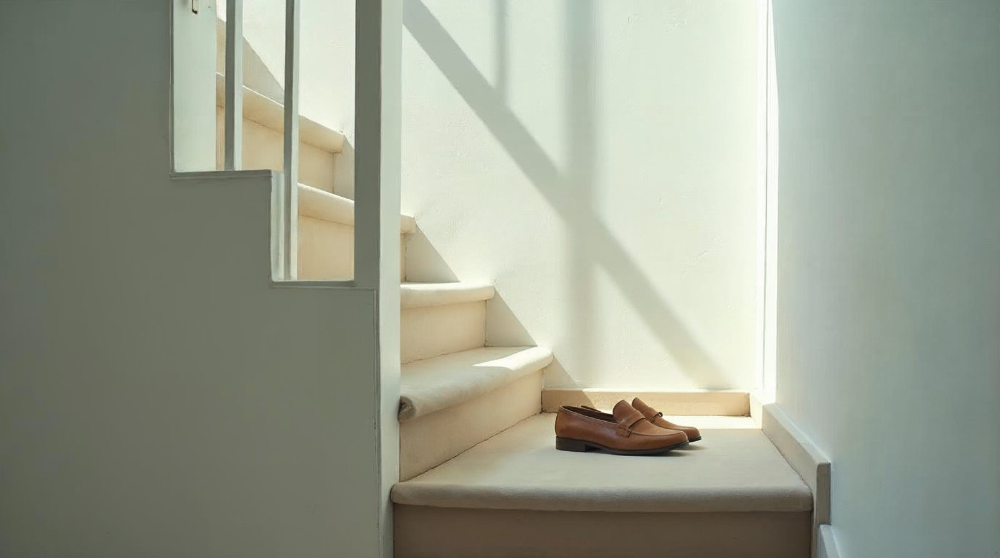
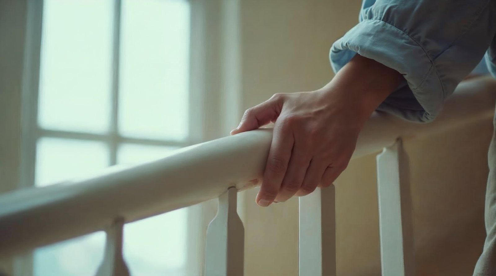
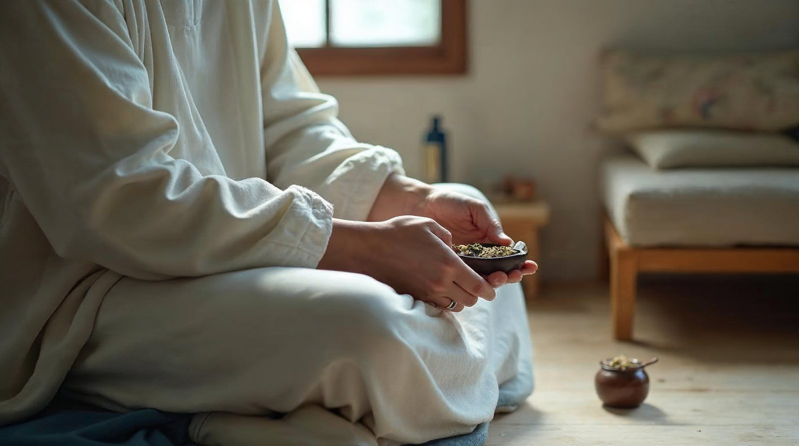
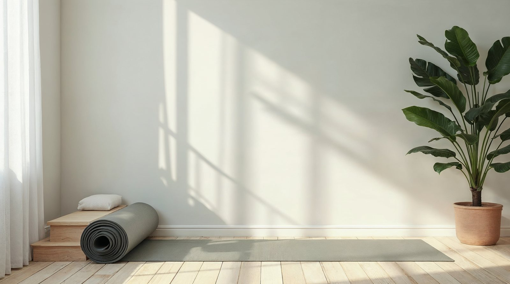
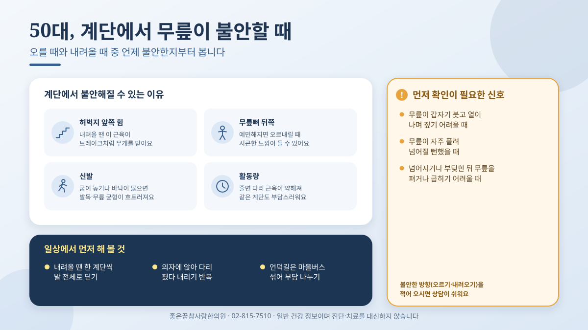

이종호 한의사 감수좋은꿈참사랑한의원 대표원장 (한의사 면허번호 19769)발행 2026-11-23 · 수정 2026-11-26
이 글의 차례
- 왜 이런 불편이 생길 수 있나요
- 계단을 오르내리는 요령
- 자주 하는 오해
- 예를 들면 이런 경우입니다
- 먼저 이렇게 여쭙니다
- 일상에서 먼저 해 볼 수 있는 것
- 스스로 점검해 보세요
- 한의원에서 함께 살필 수 있는 경우
- 이렇게 기록해 오시면 상담이 쉬워집니다
- 며칠 지켜보고, 언제 바로 확인하나요
- 무릎 앞쪽 시큰함, 안쪽 통증, 힘 풀림은 어떻게 다를까요?
- 왜 내려갈 때가 더 불안할까요
- 집에서 하는 다리 힘 기르기 순서
- 신발과 보조 도구는 어떻게 고를까요?
- 체중과 생활 습관이 무릎에 주는 영향
- 계단 많은 동네에서 하루 동선 짜기
- 무릎이 불안한 날의 하루, 이렇게 조절해 보세요
- 진료는 어떤 흐름으로 이어지나요?
- 사진에서 무릎이 닳았다는 말을 들었다면
- 이런 증상은 먼저 확인이 필요합니다
- 함께 읽으면 좋은 글
50대에 접어들면 계단 앞에서 한 번 멈칫하게 되는 분이 늘어납니다. 아프지는 않아도 불안한 느낌이 든다면 다리 힘과 균형이 보내는 첫 신호일 수 있어, 언덕과 계단이 많은 상도동·노량진 생활에서는 더 일찍 살펴보는 것이 좋습니다.
왜 이런 불편이 생길 수 있나요
- 계단을 내려올 때는 허벅지 앞쪽 근육이 브레이크처럼 무게를 받아 주어야 해, 힘이 줄면 불안해집니다.
- 무릎뼈 뒤쪽이 예민해지면 오르내릴 때 시큰한 느낌이 들 수 있습니다.
- 굽이 높거나 바닥이 닳은 신발은 발목과 무릎의 균형을 흐트러뜨립니다.
- 활동량이 줄어 다리 근육이 약해지면 같은 계단도 더 부담스럽게 느껴집니다.
계단을 오르내리는 요령
- 오를 때는 덜 불편한 다리를 먼저 올리고, 내려올 때는 불편한 다리를 먼저 내립니다.
- 난간이 있는 쪽으로 다니며 손을 가볍게 얹고 오르내립니다.
- 발 앞부분만 걸치지 말고 발바닥 전체를 계단에 올립니다.
- 무릎이 안쪽으로 모이지 않게 무릎과 발끝 방향을 맞춥니다.
- 짐이 있으면 양손에 나누어 들거나 계단 앞에서 잠시 내려놓고 나눠 옮깁니다.

자주 하는 오해
- 무릎이 불안하면 계단을 아예 끊어야 한다고 여기기 쉽지만, 완전히 피하면 다리 힘이 더 줄 수 있어 난간을 잡고 천천히 오르내리는 연습을 이어 가는 경우가 많습니다.
- 무릎 소리가 나면 관절이 닳았다는 뜻이라고 걱정하기 쉽지만, 통증이나 붓기 없이 나는 소리는 흔한 편이라 함께 나타나는 증상을 봅니다.
- 보호대를 하면 무릎이 튼튼해진다고 생각하기 쉽지만, 오래 의지하면 근육을 덜 쓰게 될 수 있어 쓰는 시간과 상황을 정해 두는 편이 좋습니다.
- 50대 무릎 불편은 나이 탓이니 어쩔 수 없다고 여기기 쉽지만, 신발과 걷는 습관, 다리 힘을 점검하면 생활에서 바꿀 수 있는 부분이 있습니다.

예를 들면 이런 경우입니다
- 예를 들어 출퇴근길에 지하철역 계단을 매일 오르내리는 50대 직장인이라면, 내려올 때 더 불안한지 확인하고 붐비는 시간에는 에스컬레이터를 섞어 쓰면서 집에서 다리 힘을 기르는 동작을 함께 정합니다.
- 예를 들어 장바구니를 들고 언덕길과 계단을 오르는 분이라면, 짐 무게를 나누고 계단 앞에서 한 번 쉬어 가는 습관부터 바꿔 봅니다.
- 예를 들어 등산을 즐기다 하산길에만 무릎이 시큰해지는 분이라면, 내리막 속도와 보폭, 등산 스틱 사용 여부를 함께 이야기합니다.
- 예를 들어 오래 앉아 일하다 일어나 첫 계단을 내려갈 때만 무릎이 불안한 분이라면, 일어선 뒤 몇 걸음 걸어 무릎을 풀고 계단을 내려가는 습관부터 들여 봅니다.
먼저 이렇게 여쭙니다
- 오를 때와 내려올 때 중 언제 더 불안하신가요?
- 무릎이 아픈가요, 힘이 풀리는 느낌인가요?
- 하루에 걷는 거리와 신발은 어떤가요? 굽이 높거나 바닥이 닳은 신발은 아닌가요?
- 난간을 꼭 잡게 되나요?
- 무릎이 부었던 적이 있나요?
- 오래 앉아 있다 일어설 때 무릎이 뻣뻣한가요?
일상에서 먼저 해 볼 수 있는 것
- 계단을 내려올 때는 한 계단씩 천천히, 발 전체로 딛기
- 바닥이 미끄럽지 않고 발에 맞는 신발로 바꾸기
- 의자에 앉아 다리를 천천히 펴고 내리는 동작을 반복하며 다리 힘 유지하기
- 무거운 짐을 들고 계단을 오르내리는 일 줄이기
- 언덕길이 많다면 마을버스를 섞어 이동 부담 나누기
- 오래 앉아 있다 계단을 쓰기 전에는 무릎을 몇 번 굽혔다 펴서 풀어 주기
스스로 점검해 보세요
- 계단을 내려올 때 난간을 찾게 된다
- 오르내릴 때 무릎 앞쪽이 시큰하다
- 무릎이 순간 힘이 풀리는 느낌이 든 적이 있다
- 오래 앉아 있다 일어나면 무릎이 뻣뻣하다
- 쪼그려 앉기가 예전보다 불편하다
- 많이 걸은 날 저녁에 무릎이 붓는 느낌이 든다
- 신발 굽이 높거나 바닥이 많이 닳았다
해당하는 항목이 있다면 진료 때 불안한 방향과 함께 말씀해 주세요.

한의원에서 함께 살필 수 있는 경우
- 계단에서 무릎이 시큰하거나 힘이 풀리는 느낌이 드는 경우 어느 동작에서 그런지 함께 살핍니다.
- 걷고 난 뒤 무릎과 엉덩이가 뻐근하게 이어지는 경우 걷는 습관과 체형을 함께 살핍니다.
- 날씨가 추워지면 무릎이 더 불안한 경우 활동량과 생활 습관을 함께 살핍니다.
좋은꿈참사랑한의원에서는 서고 걷고 앉는 동작을 확인하고, 무릎 주변을 눌러 예민한 곳을 찾습니다. 필요하다고 판단될 때 초음파로 무릎 주변을 살피고 침·약침 등을 상태에 맞춰 정하며, 귀가 전에는 계단을 오르내리는 요령을 알려 드립니다.
첫 방문에는 원장이 모든 분의 맥을 먼저 짚고, 맥을 짚는 동안 언제부터, 오를 때와 내려올 때 중 언제 불편한지, 다치거나 부은 적이 있는지를 여쭙니다. 이어서 걷는 모습과 무릎을 굽히고 펴는 범위를 함께 보고, 오늘 할 치료와 이유를 먼저 설명드린 뒤 진행합니다.
같은 '무릎이 시리다'는 말씀이어도 저는 맥과 몸의 상태에 따라 살피는 방향을 다르게 잡습니다. 어디의 힘이 부족한지, 잠과 소화는 어떤지 함께 보는 이유입니다. 다음 진료에서는 그사이 계단과 걷기 기록을 보며 활동 범위를 다시 맞춥니다.

이렇게 기록해 오시면 상담이 쉬워집니다
- 불안한 방향(오르기, 내려오기)과 자주 다니는 계단·언덕
- 하루 걷는 거리나 걸음 수
- 무릎이 부은 날이나 아팠던 날의 활동
- 자주 신는 신발의 굽 높이와 바닥 닳은 모양
- 무릎에 부담이 갔던 운동이나 집안일(등산, 쪼그려 앉아 하는 일 등)
며칠 지켜보고, 언제 바로 확인하나요
- 오랜만에 많이 걷거나 등산한 뒤 생긴 시큰함은 계단과 내리막을 줄이고 1~2주 지켜볼 수 있습니다.
- 2주가 넘게 계단에서 불안한 느낌이 이어지거나, 무릎이 풀리는 일이 반복된다면 진료를 받아 보세요.
무릎 앞쪽 시큰함, 안쪽 통증, 힘 풀림은 어떻게 다를까요?
같은 '계단이 불안하다'는 말씀도 아픈 자리와 느낌에 따라 살필 곳이 달라집니다.
- 무릎 앞쪽, 무릎뼈 주변이 시큰한 경우: 계단을 내려가거나 오래 앉아 있다 일어날 때 심해지기 쉽고, 쪼그려 앉기가 불편합니다. 허벅지 앞쪽 근육과 무릎뼈가 움직이는 길을 함께 봅니다.
- 무릎 안쪽이 아픈 경우: 많이 걸은 날 저녁에 무릎 안쪽 관절선이 욱신거리고, 아침에 잠깐 뻣뻣한 분이 많습니다. 다리 모양과 걷는 습관, 체중 변화를 함께 여쭙습니다.
- 힘이 풀리거나 걸리는 경우: 통증보다 무릎이 순간 꺾이거나 무언가 끼는 느낌이 있다면, 예전에 다친 적이 있는지 자세히 여쭙고 필요하다고 판단되면 영상 검사가 가능한 의료기관 확인을 권합니다.
어느 쪽인지에 따라 집에서 할 운동도 달라져, 진료 때 아픈 곳을 손가락 하나로 짚어 보여 주시면 좋습니다. 제가 짐작한 자리와 가리키시는 자리가 조금 다르면 손을 옮겨 다시 봅니다.
왜 내려갈 때가 더 불안할까요
계단을 오를 때는 근육이 짧아지며 몸을 밀어 올리지만, 내려갈 때는 근육이 길어지면서 몸무게를 버텨 주어야 합니다. 브레이크를 밟는 일이 엔진을 돌리는 일보다 섬세한 것처럼, 내려갈 때는 허벅지 앞쪽 근육이 힘을 조절하며 무게를 받아 내야 해 근력이 줄면 불안이 먼저 느껴지기 쉽습니다.
내려갈 때는 무릎이 더 깊이 굽은 채 체중을 받기 때문에 무릎뼈 뒤쪽에 실리는 부담도 커집니다. 여기에 50대 이후 다초점 안경을 쓰기 시작하면 발밑 계단 끝이 흐릿하게 보여 더 조심스러워지기도 합니다.
그래서 내려갈 때만 불안하다면 허벅지 앞쪽 근력과 발밑이 잘 보이는지, 이 두 가지를 먼저 살펴보시길 권합니다.
집에서 하는 다리 힘 기르기 순서
- 앉아서 다리 펴기: 의자에 앉아 한쪽 무릎을 천천히 펴고 3초 머문 뒤 내립니다. 양쪽 열 번씩.
- 뒤꿈치 들기: 싱크대를 가볍게 잡고 뒤꿈치를 올렸다 천천히 내립니다.
- 옆으로 누워 다리 들기: 옆으로 누워 위쪽 다리를 곧게 편 채 한 뼘 정도 들었다 내리며 엉덩이 옆 근육을 깨웁니다.
- 얕게 앉았다 일어나기: 의자 앞에 서서 엉덩이가 의자에 닿을 듯 말 듯 내려갔다 올라옵니다. 무릎이 발끝 안쪽으로 모이지 않게 합니다.
- 한 칸 계단 연습: 난간을 잡고 맨 아래 한 칸만 천천히 오르내리며 무릎과 발끝 방향을 맞춥니다.
처음에는 하루 한 번, 각 동작 몇 번씩으로 시작해 다음 날 무릎 상태를 보고 늘리세요. 무릎이 붓거나 시큰함이 커지면 그 동작은 쉬고 진료 때 말씀해 주세요.
신발과 보조 도구는 어떻게 고를까요?
- 신발: 뒤꿈치가 단단히 잡히고 바닥 쿠션이 적당한 운동화가 무난합니다. 굽이 높거나 바닥이 얇은 신발은 계단에서 무릎이 흔들리기 쉽습니다.
- 바닥 닳은 모양: 신발 뒤꿈치 바깥쪽이나 안쪽이 유난히 닳았다면 걷는 습관이 한쪽으로 기울어 있다는 신호일 수 있어, 진료 때 그 신발을 신고 와 주세요.
- 등산 스틱: 내리막이 긴 산길에서는 양손 스틱이 무릎 부담을 나누는 데 도움이 될 수 있습니다. 길이는 손잡이를 잡았을 때 팔꿈치가 직각이 되도록 맞춥니다.
체중과 생활 습관이 무릎에 주는 영향
계단을 오르내릴 때 무릎은 평지를 걸을 때보다 훨씬 큰 힘을 받습니다. 그래서 몸무게가 조금만 늘어도 계단에서 느끼는 부담은 더 크게 다가옵니다. 반대로 몸무게를 조금 줄이면 무릎이 받는 부담도 함께 줄어듭니다.
바닥에 쪼그려 앉아 하는 집안일, 양반다리로 오래 앉는 습관도 무릎을 깊게 굽힌 채 머물게 합니다. 걸레질은 밀대로, 바닥 밥상은 식탁으로, 손빨래는 높은 대야로 바꿔 보세요.
추운 날에는 무릎이 더 뻣뻣하게 느껴질 수 있어, 바깥에 나가기 전 실내에서 무릎을 몇 번 굽혔다 펴고 무릎을 덮는 옷을 입는 것도 도움이 됩니다.
계단 많은 동네에서 하루 동선 짜기
- 지하철역은 엘리베이터와 에스컬레이터 위치를 미리 알아 두고, 무릎이 불편한 날은 계단을 줄입니다.
- 장보기는 한 번에 몰아서 무겁게 들기보다 두세 번 나누거나 바퀴 달린 장바구니를 씁니다.
- 언덕길은 내려올 때 보폭을 줄이고, 길이 넓고 안전하다면 지그재그로 비스듬히 내려오는 것도 무릎 부담을 덜 수 있습니다.
무릎이 불안한 날의 하루, 이렇게 조절해 보세요
무릎 상태는 날마다 조금씩 다릅니다. 컨디션이 좋은 날과 불안한 날을 나눠 활동을 조절하면 무리를 줄일 수 있습니다.
- 아침에 일어나 무릎이 뻣뻣하고 계단 첫 칸부터 불안하다면, 출퇴근·장보기 같은 일상 걷기는 하되 운동 삼아 더 걷는 것은 그날 쉬고 평지 위주로 다닙니다.
- 전날 많이 걸어 무릎이 묵직하다면 계단 대신 엘리베이터를 쓰고, 앉아서 다리 펴기 같은 가벼운 동작만 합니다.
- 컨디션이 좋은 날에는 난간을 잡고 계단을 천천히 오르내리며 다리 힘 연습을 이어 갑니다.
무릎 상태를 0에서 10까지 숫자로 매일 적어 두면, 어떤 활동 다음 날 무릎이 불안했는지 스스로도 보이기 시작합니다.
진료는 어떤 흐름으로 이어지나요?
첫 진료에서 불안한 계단 동작과 아픈 자리를 정리하면, 그다음부터는 그 동작이 어떻게 바뀌는지를 기준으로 진료를 이어 갑니다. 무릎 주변 근육의 긴장과 예민한 자리에 따라 침이나 약침, 체외충격파 가운데 필요한 것을 상태에 맞춰 정하고, 집에서 할 다리 힘 동작도 단계에 맞춰 조금씩 바꿔 드립니다.
가장 불편한 자리는 원장이 직접 치료하고, 그 밖에 뻐근한 곳은 직원이 온열·자기장 같은 물리치료로 이어서 살핍니다. 치료 중 불편하면 바로 말씀해 주세요.
사진에서 무릎이 닳았다는 말을 들었다면
엑스레이를 찍고 무릎이 닳았다는 말을 들으면 덜컥 겁이 납니다. 그런데 사진에 보이는 모습과 아픈 정도가 꼭 같지는 않습니다. 닳은 것이 있어도 둘레의 근육과 걸음을 잘 돌보면 무릎을 쓸 수 있는 시간이 달라질 수 있다고 저는 생각합니다.
저희 어머니 댁에는 시집오실 때 외할머니가 해 주신 오래된 자개장이 있습니다. 문을 열면 삐걱거리는데도 어머니는 아침마다 마른 수건으로 그 장을 닦으시고, 가끔 열어 보면 여전히 멀쩡합니다. 내 무릎도 그렇게 매일 닦고 아끼는 마음으로 돌보시면 좋겠습니다.
계단 앞에서 한 번 멈칫하는 그 순간이 마음에 걸려 이 글을 찾으셨을 겁니다. 다음에 오시면 오를 때와 내려올 때 중 언제 더 불안하셨는지, 그 주의 무릎 숫자가 어땠는지부터 여쭙겠습니다.
이런 증상은 먼저 확인이 필요합니다
- 무릎이 갑자기 붓거나 붉어지거나 뜨거워진 경우, 열이 나는 경우
- 넘어진 뒤 체중을 싣기 어렵거나, 펴고 굽히기 어렵거나, 모양이 달라 보이는 경우
이런 신호가 있으면 한의원보다 가까운 병원이나 응급실을 먼저 찾으세요.
함께 읽으면 좋은 글
- 계단을 내려갈 때 무릎이 아프면 한의원에서는 무엇을 먼저 묻나요?
- 무릎이 아프면 운동을 완전히 쉬어야 할까요?
- 60대에 계단에서 난간을 꼭 잡게 되었다면 몸에서 무엇을 살펴봐야 하나요?

여쭙는 것
- 오를 때와 내려올 때 중 언제 더 불안하신가요?
- 무릎이 아픈가요, 힘이 풀리는 느낌인가요?
- 하루에 걷는 거리와 신발은 어떤가요? 굽이 높거나 바닥이 닳은 신발은 아닌가요?
생활에서 해 볼 것
- 계단을 내려올 때는 한 계단씩 천천히, 발 전체로 딛기
- 바닥이 미끄럽지 않고 발에 맞는 신발로 바꾸기
- 의자에 앉아 다리를 천천히 펴고 내리는 동작을 반복하며 다리 힘 유지하기
한의원에서 함께 살필 것
- 계단에서 무릎이 시큰하거나 힘이 풀리는 느낌이 드는 경우 어느 동작에서 그런지 함께…
- 걷고 난 뒤 무릎과 엉덩이가 뻐근하게 이어지는 경우 걷는 습관과 체형을 함께 살핍니다.
- 날씨가 추워지면 무릎이 더 불안한 경우 활동량과 생활 습관을 함께 살핍니다.
먼저 확인이 필요한 신호
- 무릎이 갑자기 붓거나 붉어지거나 뜨거워진 경우, 열이 나는 경우
- 넘어진 뒤 체중을 싣기 어렵거나, 펴고 굽히기 어렵거나, 모양이 달라 보이는 경우
한눈에 보는 표
| 구분 | 핵심 |
|---|---|
| 여쭙는 것 | 오를 때와 내려올 때 중 언제 더 불안하신가요? 무릎이 아픈가요, 힘이 풀리는 느낌인가요? |
| 생활에서 해 볼 것 | 계단을 내려올 때는 한 계단씩 천천히, 발 전체로 딛기 바닥이 미끄럽지 않고 발에 맞는 신발로 바꾸기 |
| 한의원에서 함께 살필 것 | 계단에서 무릎이 시큰하거나 힘이 풀리는 느낌이 드는 경우 어느 동작에서 그런지 함께 살핍니다. 걷고 난 뒤 무릎과 엉덩이가 뻐근하게 이어지는 경우 걷는 습관과 체형을 함께 살핍니다. |
| 먼저 확인이 필요한 신호 | 무릎이 갑자기 붓거나 붉어지거나 뜨거워진 경우, 열이 나는 경우 넘어진 뒤 체중을 싣기 어렵거나, 펴고 굽히기 어렵거나, 모양이 달라 보이는 경우 |
자주 묻는 질문
무릎이 불안한데 운동을 쉬어야 하나요?
무릎이 붓고 뜨거운 시기에는 쉬는 것이 먼저입니다. 그렇지 않다면 통증이 없는 범위에서 가볍게 걷기를 이어 가는 경우가 많습니다.
무릎 보호대가 필요한가요?
개인차가 있어 상태를 보고 정하는 것이 좋습니다. 오래 착용하면 근육을 덜 쓰게 될 수 있어 상담 때 함께 이야기해 보시길 권합니다.
계단 오르기 운동을 따로 해도 되나요?
무릎이 불안한 시기에는 계단 운동보다 평지 걷기나 의자에 앉아 다리 펴기처럼 부담이 적은 동작부터 시작하는 편이 무난합니다.
무릎에서 소리가 나는데 괜찮을까요?
아프거나 붓지 않는 소리는 흔한 편입니다. 소리와 함께 통증, 붓기, 걸리는 느낌이 있다면 진료 때 말씀해 주세요.
좋은꿈참사랑한의원은 재진 때 지난번 이야기부터 이어서 여쭙니다. 진료시간과 예약은 오시는 길에서 확인하세요.
어디서 상담받을 수 있나요?
좋은꿈참사랑한의원은 서울 동작구 만양로2길 2 신성빌딩 3층·5층(서울 동작구 상도동, 7호선 상도역 3번 출구 근처)에 있습니다. 한의사 3명(이종호 대표원장, 조영기 수석진료원장, 정원영 진료원장)이 진료합니다. 진료시간은 평일 09:30~20:00(점심 13:00~14:00), 토·일·공휴일 09:30~15:00이며, 방문 전 전화로 확인을 권합니다. 예약은 네이버 예약, 카카오톡 상담, 전화 02-815-7510로 받습니다.
이 글은 일반적인 건강 정보이며 개인의 진단이나 치료를 대신하지 않습니다. 증상이 있거나 복용 중인 약이 있다면 진료를 통해 확인하세요. 치료 효과는 개인마다 다를 수 있습니다.
작성 기준: 일반적으로 알려져 있는 건강 정보를 참고해 정리했습니다(대표원장 감수). 증상 기록은 1~2주 동안 하루 1회, 비슷한 시간에 적어 오시면 지난 상태와 비교하기 쉽습니다.